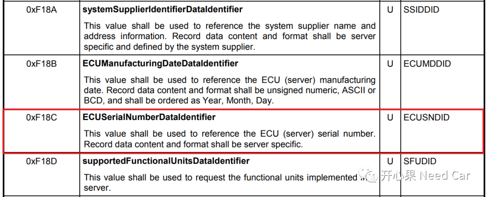
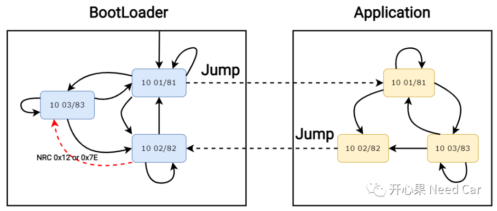
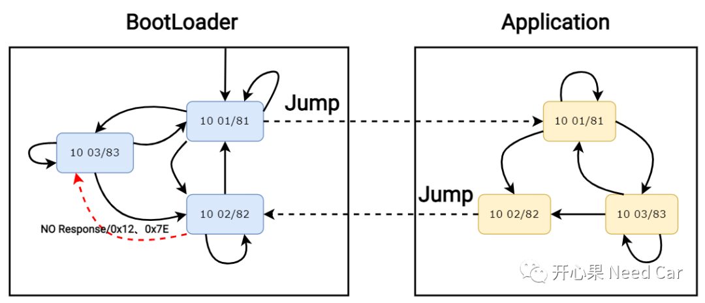
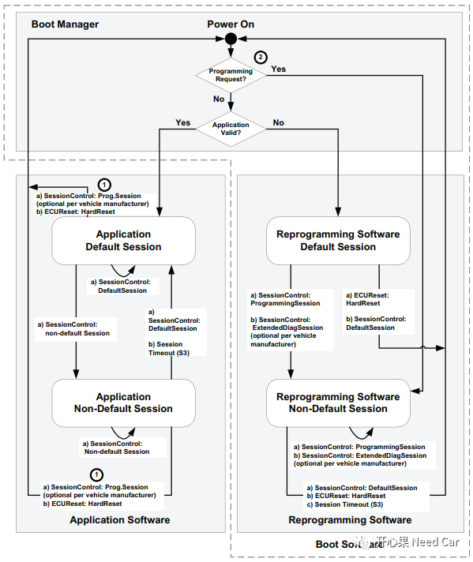
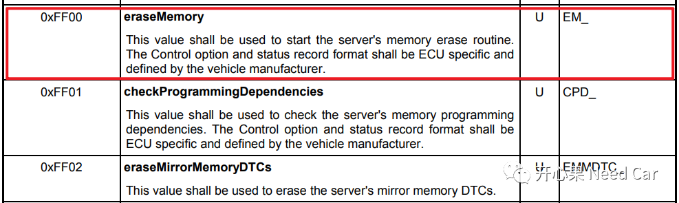
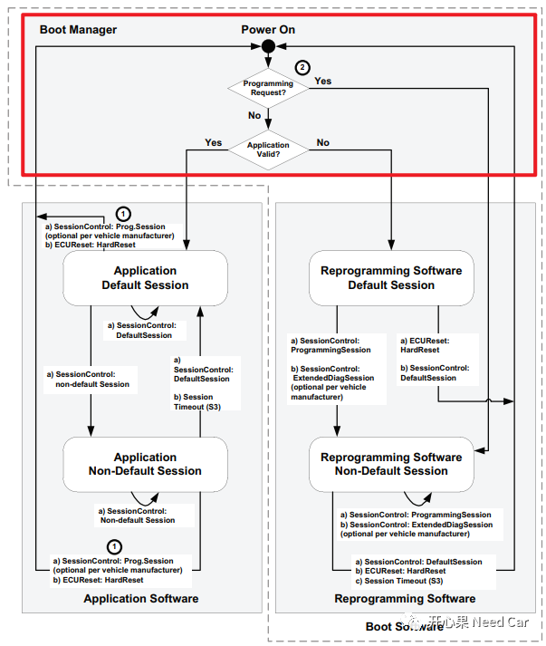
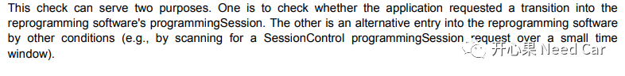
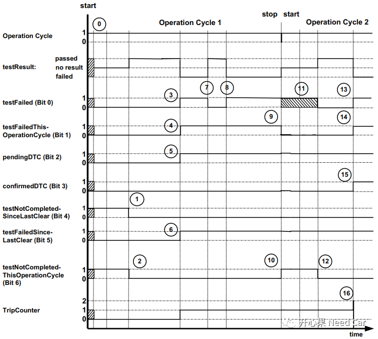
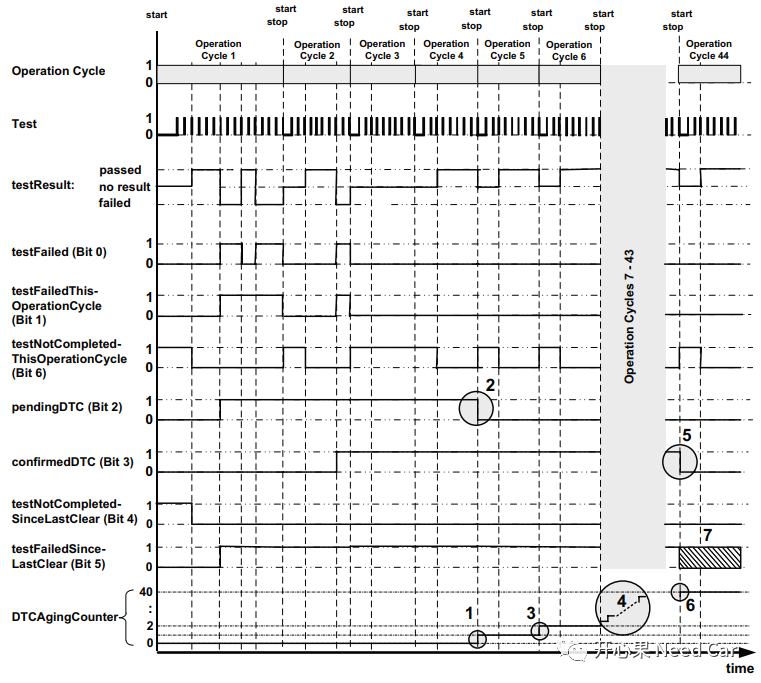

开心果 Need Car · 2022-04-05T09:19:00+08:00 · 微信原文
“我的爸爸他有点世俗，有点贪小便宜，有点不可理喻，甚至有时候有点虚假，但他却努力教我所有美好的品质，他想我成为好的人，一切的不堪他都一个人承受，只是因为我是他的儿子，他很平凡，什么都给不了我，却又什么都给了我。”-《父亲的散文诗》
QA1：哪些服务会用到DID？
答：实际开发中，0x22 (readDataByIdentifier), 0x2E (writeDataByIdentifier), 0x2F (inputOutputControlByIdentifier)以及0x19 0x04(readDTCSnapshotRecordByDTCNumber)会用到DID。这里为什么提这个问题呢？虽然DID的开发工作不复杂，但是工作量大，难免会有没注意的细节。需求中，会约束某个DID在哪些会话、哪些服务中支持，如果越界则会报错，比如：0xF18C，ECU序列号。多数会约束0xF18C在0x22和0x2E中支持，但有时会约束其被刷写的次数（如：1次），为什么做这样的约束呢？因为OEM想在EOL的时候一次写入，且这个ECU序列号只有OEM知道，还得保证不被其他第三方改写。

QA2:$10子服务在BootLoader和Application之间如何跳转？
答：诊断服务的执行分为功能寻址和物理寻址，对于$10服务也是，我们分情况讨论。
提示：每家OEM的$10服务需求可能略有差别，且这里的Bootloader包含Boot Manager。
（1）物理寻址跳转关系

（2）功能寻址跳转关系

功能寻址时，0x02/0x82->0x03/0x83不允许跳转，ECU可以不给上位机回复NRC0x12/NRC0x7E，这个在前文聊过，可以回顾Uds诊断：这10个诊断问题，你能回答几个？。
QA3:Application Valid Flag何时擦除？


执行了内存擦除以后，如果升级失败，意味着无法进入Application程序，只能更新有效的Application程序后，才能重新进入。
如果在Bootloader中，进入了$10 02会话（编程会话），在没有执行$31 01 FF 00（擦除内存指令）之前，Application Valid Flag均有效，此时如果复位或者跳转到$10 01，还可以进入Application。
QA4：Boot Manager == Bootloader?
答：否。Boot Manager ≠ Bootloader。Boot Manager是什么呢？如下红框所示。Boot Manager可以理解为目标引导程序，即程序复位或者ECU上电时，最终执行Application程序还是Bootloader程序的引导。在Boot Manager中，没有诊断会话的概念，只有程序进入了Application程序或者Bootloader程序，才有诊断会话的概念，且会话均为默认会话(0x01)。
Application程序或者Bootloader程序是Boot Manager的Target。Boot Manager选择不同的Target，进入不同程序。所以，Application、Bootloader、Boot Manager三者是平级的关系。

QA5：冷启动，Bootloader首先进入哪个Session？
答：Default Session($10 01)。QA4刚说过，Boot Manager会引导程序进入Application程序或者Bootloader程序，如果进入的是Bootloader程序，则会进入Bootloader的Default Session。
但是在实际的开发中，因为Boot Manager功能不繁杂，单独处理为一个进程，可能显得没必要，有些厂家会将Boot Manager和Bootloader糅合到一起，这样造成的一个误区就是：我们认为Boot Manager这部分的功能代码在Default Session执行，即进入了Default Session。所以，读者请注意，前面文章表述时，我也将Boot Manager和Bootloader表述成了Bootloader。
提示：一般Bootloader没有OS，只是一个While(1)。
QA6：Boot Manager为什么要有Stay In Boot功能呢？
答：防止ECU变成“板砖”。怎么理解呢？如果Application程序崩溃了，且Application之前没有请求$10 02（编程请求，Programming Request），且Application Valid Flag有效，那么Application将永远得不到更新，程序不断地进入崩溃的Application，这就是我们常说的：ECU变成“板砖”。
我们发诊断指令，让Boot Manager引导程序进入Bootloader，Bootloader更新Application不就好了？是的。但是我们不要忽略了时间，对于ECU执行程序来说，其速度极快，上位机的诊断指令Boot Manager还没有收到，程序就已经跑到Application中了，所以，为了让Boot Manager可以收到上位机的诊断请求，在设计Boot Manager程序时，会给一个时间窗口（比如：30ms），即Stay In Boot窗口期。此时间超时以后，Boot Manager必须决定进入哪个Target，即Application程序或是Bootloader程序。

QA7：Application和Bootloader的会话测试是否要独立测试？
答：要的。我们知道Application和Bootloader是不同的程序，两者之间会因执行诊断的$11服务或者$10服务有跳转行为。但是我们也不能混淆两者的测试关系。
Application支持UDS $10服务的0x01、0x02、0x03子功能。0x01、0x02、0x03子功能的跳转关系在Application测试即可，这种测试时，可以不用Bootloader程序，即ECU中不要刷写Bootloader程序，只保留Application程序。同理，Bootloader支持UDS $10服务的0x01、0x02、0x03子功能。0x01、0x02、0x03子功能的跳转关系在Bootloader测试即可，可以不用Application程序。在实际的开发中，Application和Bootloader本就是不同的程序，测试$10服务时，应该就各自实现的子功能跳转关系进行测试。
提示：Application下的$10 02服务可以单独测试，验证其跳转Bootloader的功能，此时需要Application程序和Bootloader程序均存在。
QA8：Trip Counter累加时机？
答：当DTC对应的testFailed (Bit 0)/testFailedThisOperationCycle(Bit 1)/
pendingDTC (Bit 2)第一次置位时，Trip Counter立即累加，且在当前操作循环中完成。

Trip Counter达到阈值，confirmedDTC (Bit 3)置位后，Trip Counter清零；
Trip Counter一般会作为拓展数据进行存储，用于$19 06服务。
QA9：Aging Counter累加时机？
答：Aging Counter干啥的呢？故障清除的判断条件。诊断开发中，我们知道，某个DTC故障清除操作常用的方式有两种：
$14 FF FF FF服务
Aging Counter达到阈值

QA10：$3E 80知多少？
答：刷写的时候，上位机会用功能寻址发送$3E 80，我们自然理解到“保持ECU当前会话”，没错，确实为了维持ECU的会话。但是，我们要意识到，程序刷写的过程中是用功能寻址发送，而不是物理寻址，意味着$3E 80是给目标网段内的所有ECU发送，让目标网段内的所有ECU都维持在当前会话，说的更具体一点就是维持在非默认会话，为什么呢？因为在刷写之前，会用功能寻址将网段内的所有ECU切换到0x03(拓展会话)，且会发送0x28（CommunicationControl ）、0x85（ontrolDTCSetting）服务，让网段内所有的ECU停发应用报文、网络管理报文，同时停止DTC的Set。比如：0x28服务停发了应用报文，Node Missing对应的DTC不应在monitor，否则对应ECU就会报节点丢失DTC。如果不发送$3E 80，网段内未刷写的ECU就会因S3（一般给5s时间）超时而进入默认会话，0x28和0x85服务失效，导致DTC上报。
拓展：如果目标网段只有一个ECU，升级这个ECU完全可以不用发送$3E 80，物理寻址的诊断报文即可维持此ECU的Session，因为S3只要收到诊断请求（不管物理寻址还是功能寻址），该时间就会重置，比如：S3 = 5s。由于网段就一个ECU，可以不考虑其他ECU的工况。
参考资料
ISO 14229-1.pdf
往期精彩回顾